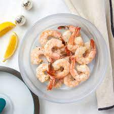
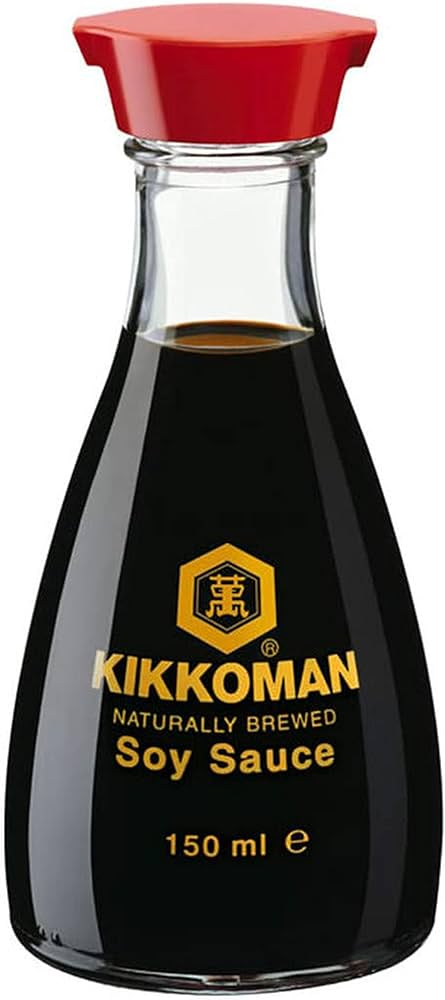

Shrimp Stir-Fry


shrimp 150 grams mixed vegetables(optional)
mixed vegetables(optional)

soya sauce 1 tablespoon garlic and ginger 1 teaspoon
garlic and ginger 1 teaspoon
 corn starch 1/2 teaspoon
corn starch 1/2 teaspoon
Serving Size: 1
Servings Per Recipe: 1
Serving Size: 1/2 cup
Calories: 300-350 kcal
| Nutrient | Amount | % Daily Value * | Total Carbohydrate | 20-25g | 8-10% |
|---|---|---|
| Dietary Fiber | 4-6g | 16-24% |
| Total Sugars | 3-4g | 8-12% |
| Protein | 25-30g | 50-60% |
| Total Fat | 15-20g | 20-30% |
| Saturated Fat | 2-3g | 10-25% |
| cholestrol | 150-200mg | 50-70% |
| sodium | 700-900mg | 30-40% |